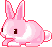
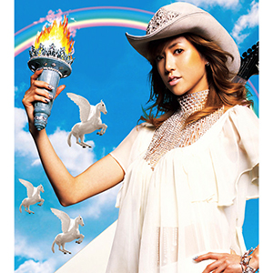

This is a collection of music that I like.
Explore and take a
listen!
Featured Track


Featured Playlist
More Music!
- bff.fm - community radio station from san francisco
- SomaFM - commercial-free, listener supported internet radio
- listen.moe - j-pop and k-pop radio
Updates
- Aug 14, 2024 - still working on this thing